One 360° street panorama goes in; the camera's position on a satellite tile comes out. This page explains the network, what each loss teaches it, which parts come from Loc² and which are ours, how well it works, and shows ten real matches from the test set.
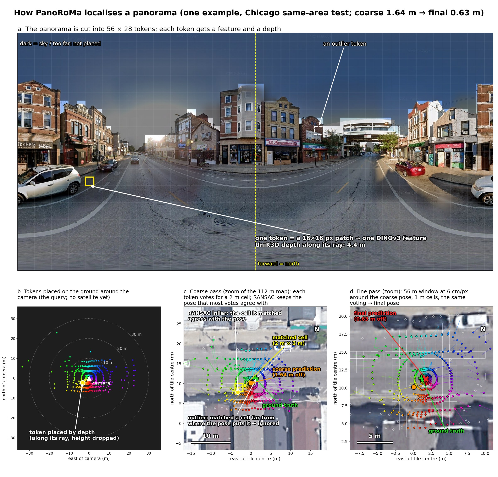
Grey boxes are frozen, amber ones are trained by us. The same pipeline runs twice: the coarse pass on the whole tile, then the fine pass on a window around the coarse answer.
flowchart LR P["360° panorama
896 × 448"] --> E1["DINOv3 sat493m encoder
frozen, 303 M params"] P --> D["UniK3D depth
metric, precomputed"] E1 --> T["56 × 28 tokens"] T --> H["Projection head
2.2 M, trained"] D --> PL["Place each token on the ground
along its ray (≤ 35 m)"] H --> DEC PL --> DEC S["Satellite tile
112 m canvas, 0.125 m/px"] --> E2["Same DINOv3 encoder
frozen"] E2 --> C["56 × 56 cells of 2 m"] C --> DEC["Sat-RoMa decoder
66.7 M, trained
per token: probability over 3136 cells + certainty"] DEC --> M["Modes per token
(1–3 candidate cells)"] M --> R["RANSAC, 3-DoF
placed point ↔ cell"] R --> CP["Coarse pose"] CP --> W["56 m window, 0.0625 m/px
around the coarse pose"] W --> FD["Second decoder
same design, 1 m cells, trained"] FD --> R2["RANSAC, 3-DoF
keep coarse if it jumps > 6 m"] R2 --> FP["Final pose"] classDef frozen fill:#e7ece9,stroke:#8a9790,color:#1b2420; classDef ours fill:#ffe9c4,stroke:#b26500,color:#1b2420; class E1,E2,D frozen; class H,DEC,FD ours;
Sizes: 303 M frozen encoder; trained per pass 2.2 M (head) + 66.7 M (decoder). Training: one Eagle node, 4× H100, TF32, encoder and decoder in bf16, total batch 32, 100 epochs ≈ 13 h per pass.
Loc² (2025) is the method whose geometry we use. It also matches a panorama to a satellite image by putting image patches on the ground with a depth estimate. We kept that geometry and replaced the matcher, the losses around it and the refinement.
All are computed per training pair and summed with the weights shown. The fine pass uses the same losses on its 1 m grid.
| Loss | What it teaches | Weight | From |
|---|---|---|---|
| Cell classification (cross-entropy over 3136 cells) | For each token whose true position is on the map: put the probability on the right 2 m cell. | 1 | Sat-RoMa / RoMa |
| Certainty (binary cross-entropy) | For each token: say whether its true cell is on the map at all (sky, far away, off the tile → no). | 0.01 | Sat-RoMa / RoMa |
| Neighbour hinge (radius 4 cells) | The right cell must beat its neighbours by a margin, which sharpens the peak. | 0.5 | ours |
| VCE pose loss | Sample 1024 token–cell matches, fit the camera pose with Procrustes, and measure the error on a 10 × 10 grid of virtual points over 5 m. This trains the matches to produce the right pose, not just the right cells. | 1 | Loc² |
| Heat-map pose NLL | Sum all tokens' votes into a map of camera positions; the true position must get high probability. | 0.5 | ours |
| Regularisation D (newest runs) | Label smoothing 0.1 on the cell classification, weight decay (decoder 0.3, head 0.05), colour jitter, quarter turns ± 10° and mirroring of map + panorama together. Stops the model memorising training tiles. | — | ours |
The whole VIGOR Chicago same-area test list (12,739 panoramas), known heading, on corrected depth. FG² and Loc² are their released models run on exactly the same panoramas. Scored twice: against VIGOR's original labels and against the corrected labels from SliceMatch (TU Delft), which move each true position outward by about 3 % (0.45 m on a typical frame).
| Method | Original labels: median | Corrected labels: median (95 % CI) | Mean, original → corrected | ≤ 5 m, corrected |
|---|---|---|---|---|
| FG² (trained on corrected labels) | 1.05 m | 0.98 m (0.96–0.99) | 1.87 → 1.84 m | 95 % |
| PanoRoMa D, two-pass (trained on original labels) | 1.12 m | 1.19 m (1.17–1.21) | 2.44 → 2.53 m | 92 % |
| Loc² (corrected depth) | 1.26 m | 1.21 m (1.19–1.23) | 3.01 → 3.03 m | 88 % |
| PanoRoMa D, first pass only | 1.37 m | 1.53 m (1.51–1.55) | 2.66 → 2.80 m | 91 % |
PanoRoMa is clearly better than Loc² on the original labels and level with it on the corrected ones. It is behind FG², the best published method: 0.07 m on the original labels, 0.21 m on the corrected ones. Part of that is the labels themselves: FG² was trained on the corrected labels and we were trained on the original ones, so our model learned positions slightly too close to the tile centre. A retrain on the corrected labels is needed for a like-for-like number. Our predictions also show a constant 0.4 m shift to the north on both label sets, which looks like a coordinate-convention bug and is being looked into. The rest of the gap is the hard frames: 8 % of ours are off by more than 5 m against 5 % for FG². On Poznań streets, without any Poznań training, PanoRoMa reaches 3.40 m (FG² 4.15 m, Loc² 3.30 m).
Chosen across the good half of the results, not only the best: the percentile says where each frame ranks among the 3000 (5th = better than 95 % of frames, 50th = a typical frame). How to read each figure:
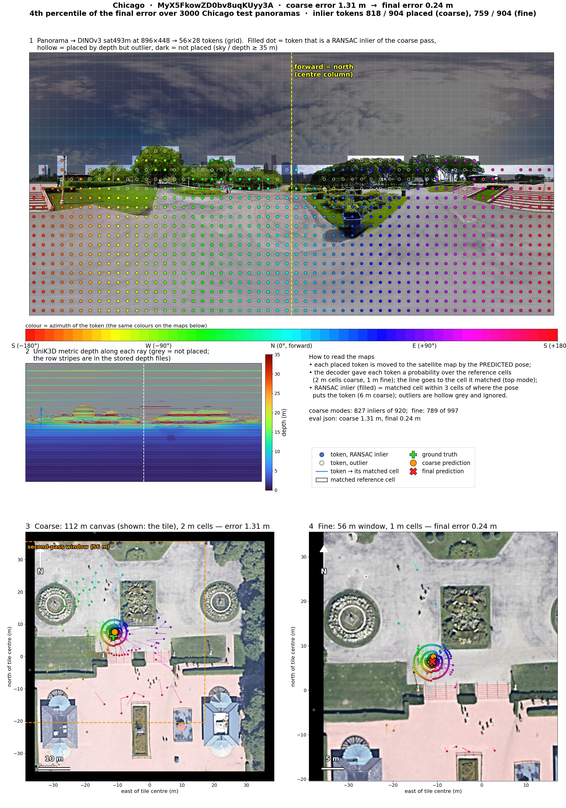
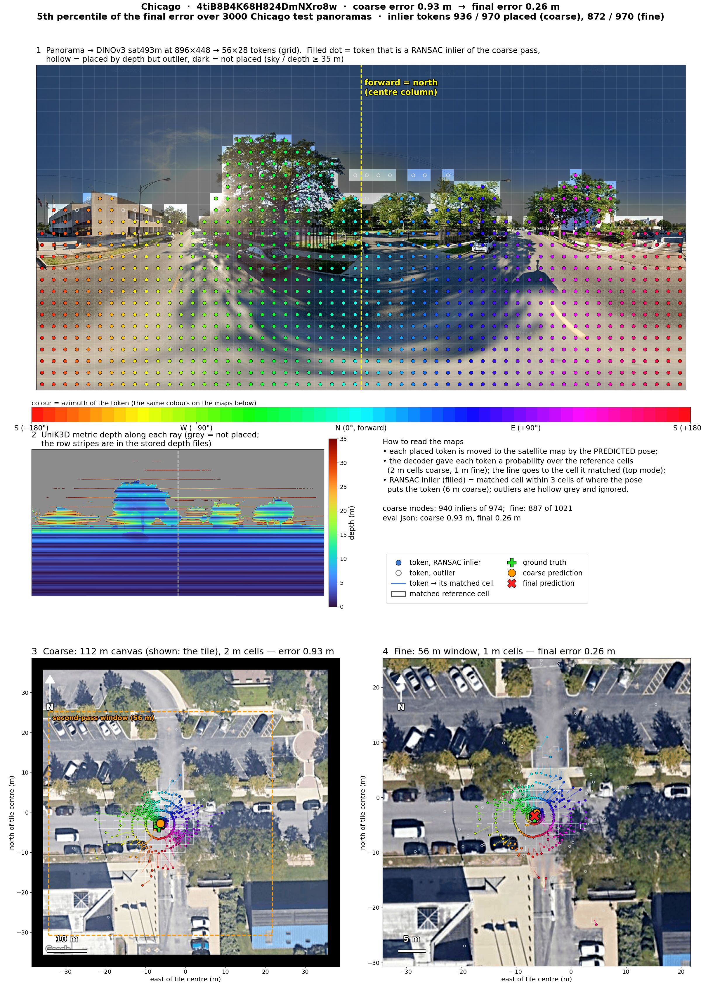
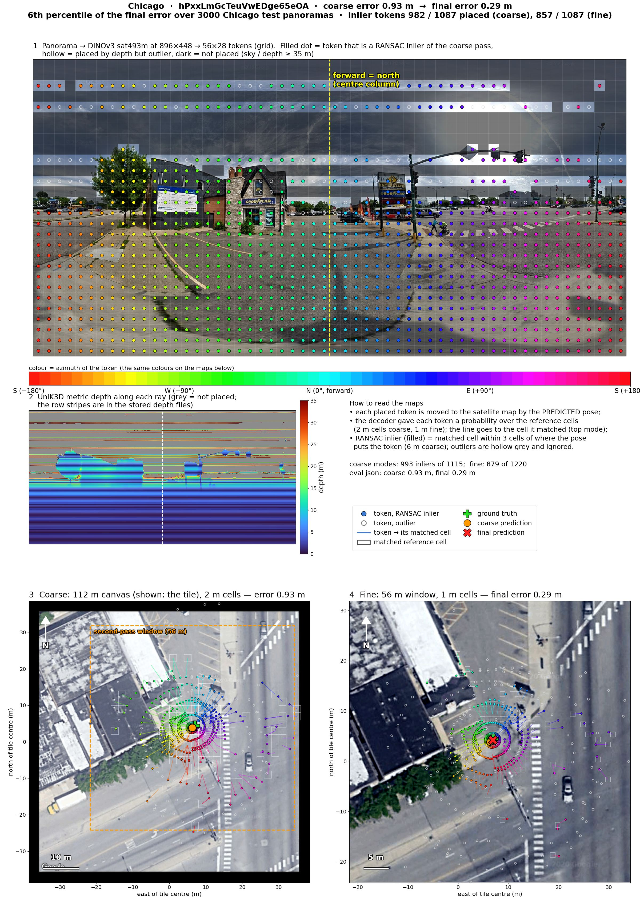
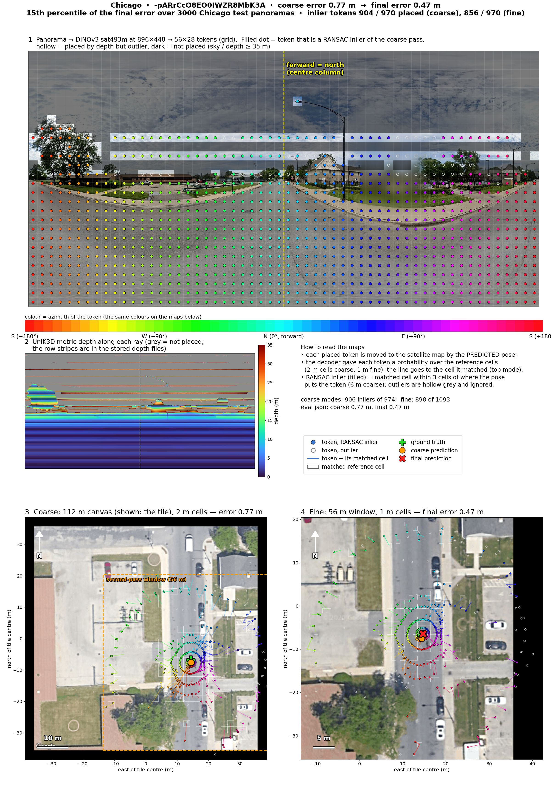
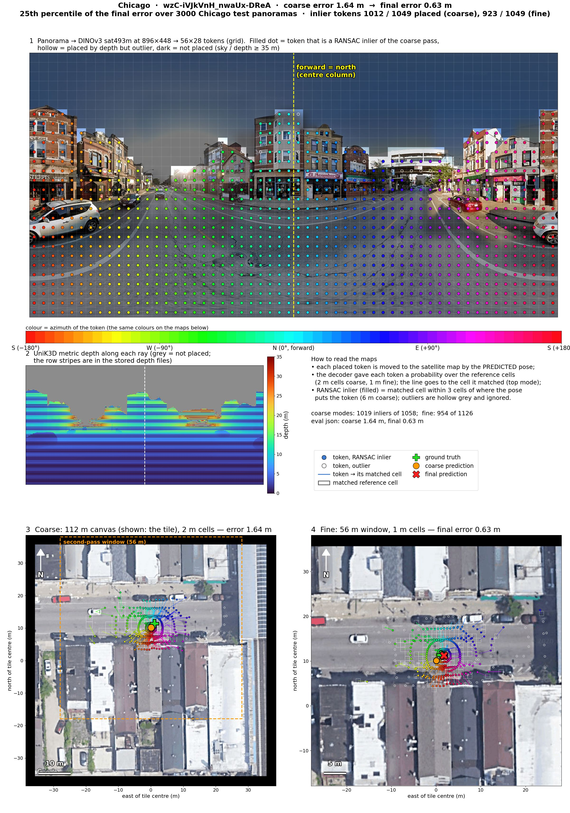
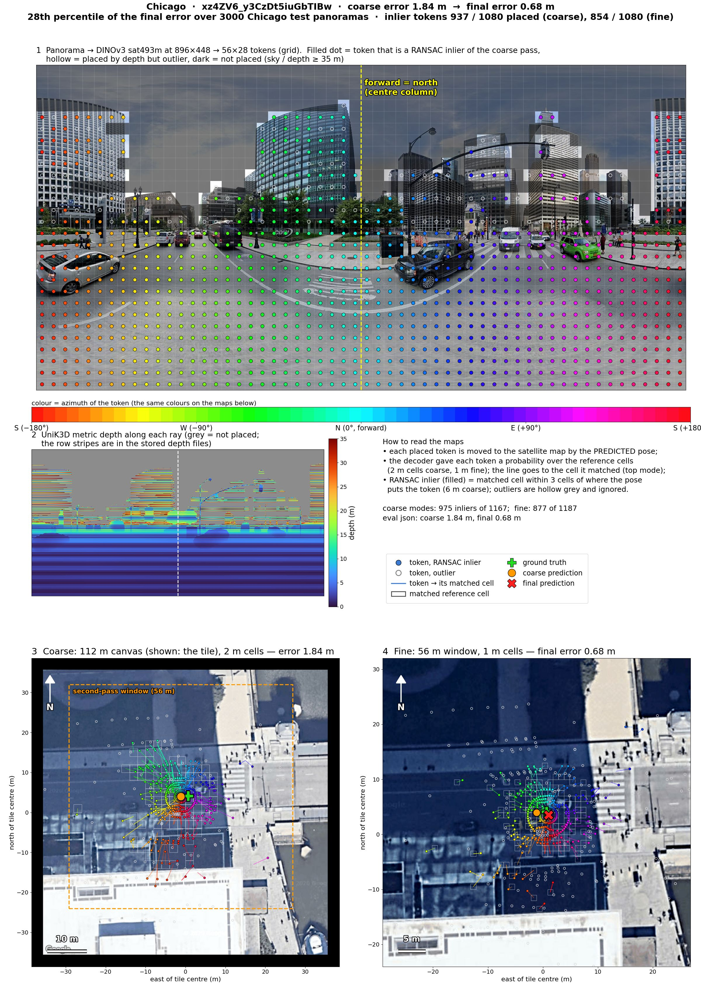
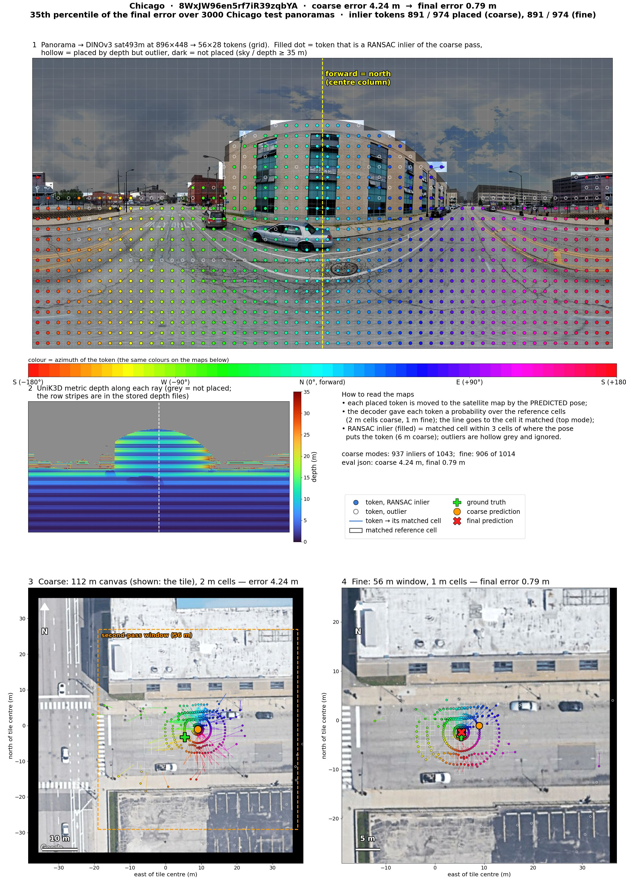
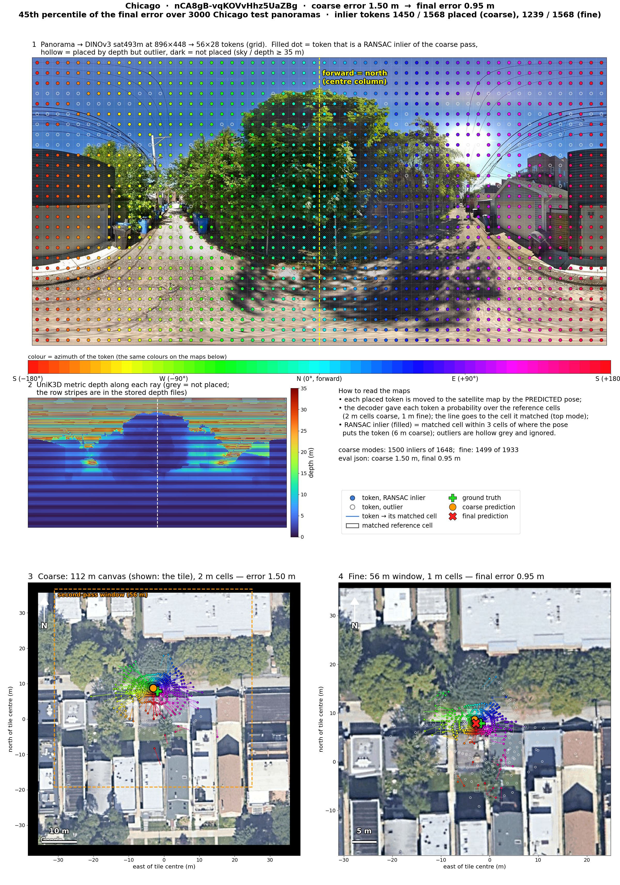
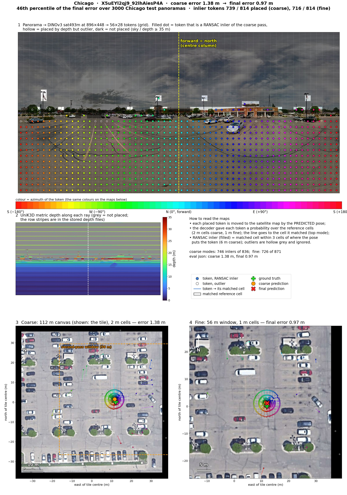
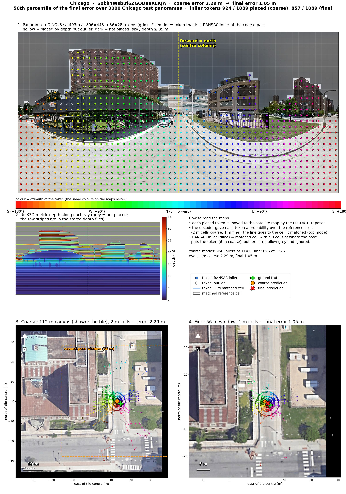
Figures: make panoroma-viz (scripts/viz_panoroma_matches.py), checkpoints vigor_samearea_4city_erp_depth_cell0125_e100_last.pt + vigor_samearea_4city_fine00625_erp_depth_e100_last.pt; every recomputed error equals the evaluation's. Files in experiments/13_panoroma_long/viz/.